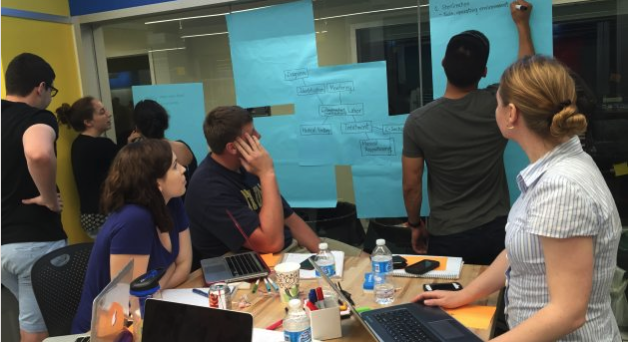

Innovating human-centered technology
to advance human societies
Our Vision
As we build and transition into the autonomous future, it is critical to place people at the center of our technological innovations. These technologies must be designed for users from the ground up, and how they will be used must shape the research of the technology. HCI must take a leadership role in ensuring that technology introduced into our world is usable, safe, secure and promotes a better society.
People
At Johns Hopkins, research in human-computer interaction is highly multidisciplinary, with relevant faculty spread across areas within Computer Science, as well as other departments in the Whiting School of Engineering, School of Medicine, School of Public Health, School of Nursing and the Applied Physics Laboratory.
HCI activities at Johns Hopkins
Malone Center for Engineering in Healthcare
The mission of The Malone Center for Engineering in Healthcare is to catalyze and accelerate the development of research-based innovations that advance the effectiveness and efficiency of health care.

Laboratory for Computational Sensing and Robotics
LCSR's mission is to create knowledge and foster innovation to further the field of robotics science and engineering. The center's researchers see robotics as an essential link between computation and action that enhances the health, safety, and efficacy of human.

Armstrong Institute for Patient Safety and Quality
The Armstrong Institute's goal is to eliminate preventable harm to patients and to achieve the best patient outcomes at the lowest cost possible, and then to share knowledge of how to achieve this goal with the world.

Center for Bioengineering Innovation & Design
Our team at the Johns Hopkins Center for Bioengineering Innovation and Design (CBID) is devoted to education and innovation, both in the service of human health, firmly rooted in both the Whiting School of Engineering and the Johns Hopkins School of Medicine.